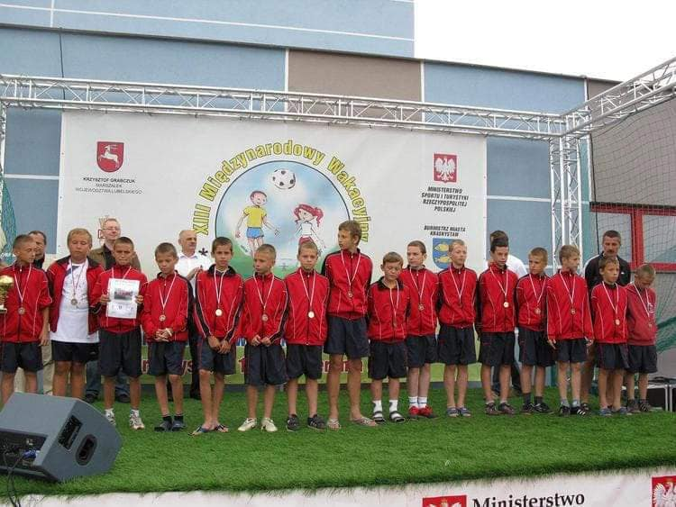

Kilka słów o mnie
Siemka, jestem Kamil jak niektórzy już pewnie wiedzą i mam 22 lata. Obecnie pracuję w logistyce, jestem specjalistą programu SAP. Moją największą pasją i zajawką jest zdecydowanie piłka nożna. Gram w klubie już od 7 roku życia i nawet udało się osiągnąć kilka fajnych międzynarodowych sukcesów. Mój Trener powtarzał, że "Zawsze trzeba próbwać nowych rzeczy i nigdy się nie poddawać, bo tylko nasze zwątpienie może nas powstrzymać" - dlatego właśnie jestem tutaj z Wami.
Zainteresowania
Rozwińmy temat piłki nożnej. Miłością do futbolu zaraził mnie mój ojciec, wspólne oglądanie meczów jak i
rozgrywki na podwórku stworzyły nierozrywalną więź z piłką, aż do dnia dzisiejszego. Jest to dla mnie
wielka
pasja, która napędza mnie każdego dnia i wpoiła wiele wartości i woli walki o swoje.
Ważną rzeczą w
moim
życiu jest również rozwój i czytanie książek. Od pewnego czasu moją uwagę przykuło również
programowanie.
Choć
nie mam jeszcze dużej wiedzy na ten temat, ani nie tworzę cudów to czuję niesamowitą dumę i satysfakcję
z
wykonanych zadań.
Keep The Blue Flag...
...Flying High. Czyli trochę o najlepszym klubie w Europie.
Chelsea Football Club
klub,
który
zmienił moje życie. Klub, który dał mi wiele wspaniałych emocji. Uwielbiam ten moment, kiedy siadam w
każdy
weekend przed telewizorem i oglądam swoją ukochaną drużynę. Najpiękniejszym momentem mojego
kibicowskiego
życia
było zdecydowanie zwycięstwo w Uefa Champions League w sezonie 2020/2021, pokonując w finale
faworyzowany
Manchaster City. Po kilku latach posuchy i słabszych sezonów, wreszczie wróciliśmy na sam szczyt i
staliśmy
się
najlepszą drużyną w Europie. Piękny moment, piękna chwila. Więcej o Chelsea przeczytasz tutaj.
| Zawodnik | Mecze | Bramki | Asysty | Klasyfikacja kanadyjska |
|---|---|---|---|---|
| Mason Mount | 8 | 3 | 2 | 5 |
| Romelu Lukaku | 10 | 4 | 0 | 4 |
| Timo Werner | 8 | 1 | 1 | 2 |
| Kai Havertz | 14 | 3 | 0 | 3 |
Powspominajmy!
Jedne z pierwszych zawodów na dużym boisku, był stres ale i skupienie :)
Międzynarodowy turniej w Krasnystawie, zajęliśmy 3 miejsce po zwycięstwie nad młodzieżową drużyną Dynama Kijów